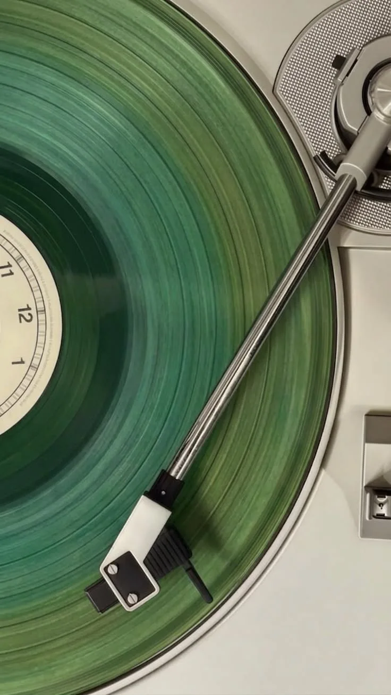
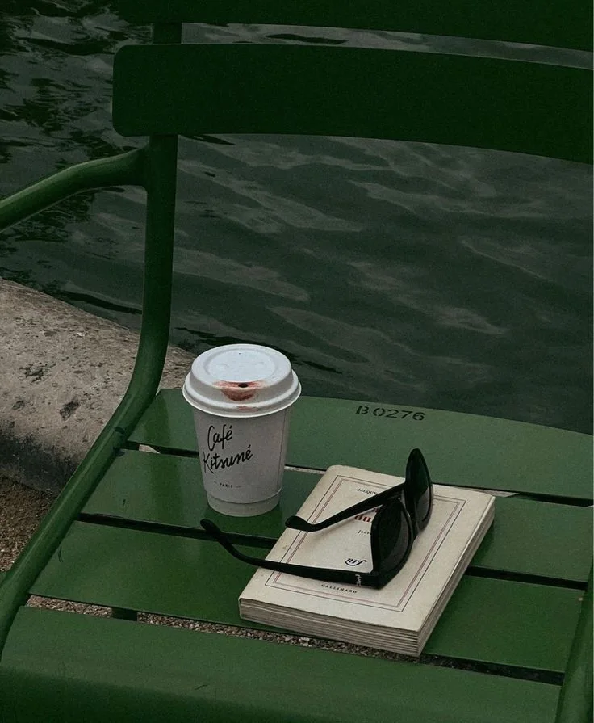

Eggs Benedict
Brioche, spinach, avocado & hollandaise.
Brunch that turns into cocktails. Dinner that turns into dancing. Music, friends, laughter — that’s a night at THEO.
 OLD RIGA, BIG ENERGY ✦
OLD RIGA, BIG ENERGY ✦
Step off the cobbled streets of Vecrīga and into a place where the bulbs glow warmer, the drinks taste better and no one is in a rush to leave.
From slow morning breakfasts to late-night tunes, THEO is made for unexpected plans and unforgettable catch-ups.
TAKE A LOOK AROUND ↗The plates are cleared, the music gets louder and the evening is only getting started. Live music, DJs and that unmistakable Old Riga energy.
SEE WHAT'S ON ↗Check Instagram for the current lineup and event times.

Right in the heart of Old Riga, where every good evening begins.
SEE YOU AT THEO ✳